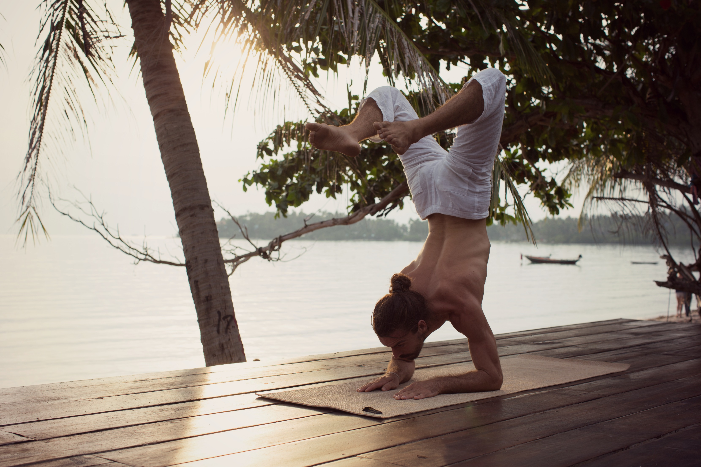
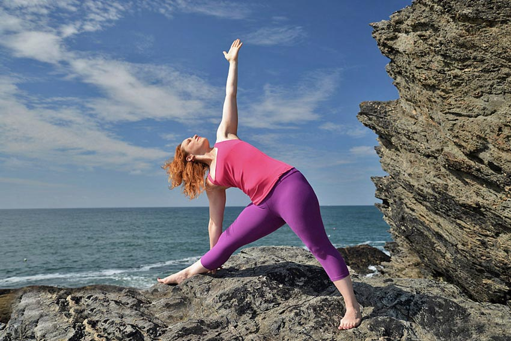
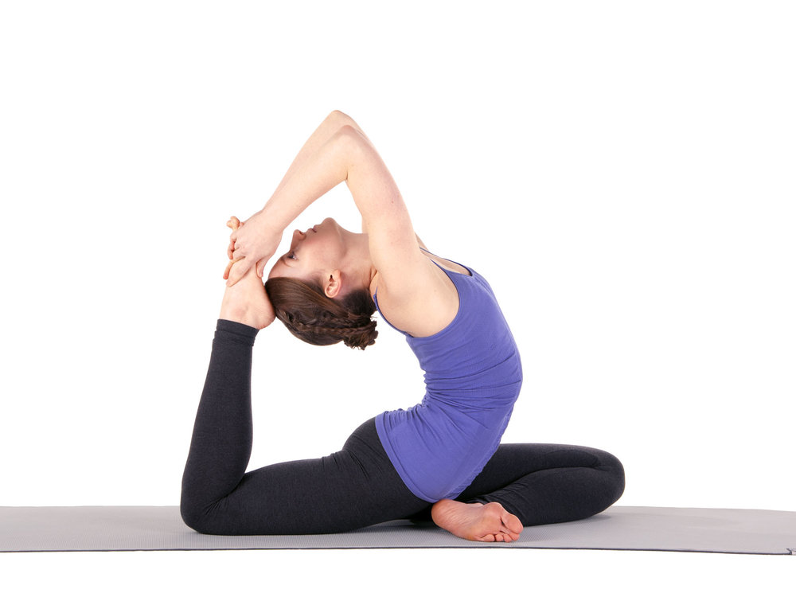

Nous travaillons avec des professeurs certifiés et expérimentés pour vous offrir la meilleure qualité et variété
de cours : hatha, vinyasa, yin, prénatal, iyengar, yoga thérapie, etc…

« Après avoir été champion de France de Hip Hop en 2005, finaliste en équipe aux mondiaux du Hip Hop à Prague et avoir accumulé
de nombreux titres en solo ou équipe dans l’univers du fitness, Fabrice découvre le yoga il y a plus de dix
ans, et décide de se consacrer désormais principalement à sa passion. De studios de yoga en Fance ou à l’étranger
ou voir même sous la tour Eiffel dans le cadre la course la parisienne pour la recherche du cancer du sein.
Il propose avec beaucoup de générosité des cours enrichis par l’ensemble des yoga qu’il a appris au cours
de ses voyages et training à l’étranger. Pourquoi YOGA Connect: pour continuer à partager ma passion au delà
du studio 😉 «

Je suis professeur de yoga depuis 2009. Je suis passionnée du corps, de son fonctionnement et de sa magie. C’est pour cette
raison que je me forme régulièrement en anatomie. Je trouve que plus nous connaissons notre corps plus nous
l’entretenons avec respect. Mon parcours m’a amené à enseigné le Yoga prénatal postnatal et le maman bébé.
Accompagner la femme pendant ces étapes de se vie est un cadeau de tous les jours. Ma pratique personnelle
est essentiellement composée de Hatha Yoga et de Yin Yoga. Depuis 2014, j’organise des retraites pour former
au Yin Yoga J’aime l’idée de pouvoir pratiquer chez soi quand son agenda ne permet pas d’aller suivre un
cours dans un studio. Il suffit de définir le temps que l’on a, le type de yoga que l’on veut en fonction
de son énergie et du moment de la journée. Et en quelques coups de souris on choisit un cours. C’est une
bonne opportunité pour continuer sa pratique à son rythme et c’est un bon complément en cours collectif.

« Apres avoir été gymnaste puis danseuse à New York, je découvre le vinyasa yoga dans cette même ville , je tombe
amoureuse de cette pratique et decide de me former à Sonic Yoga NYC (200hours yoga alliance). Mon visa se
terminant, Je rentre ensuite en France et decide d’enseigner le yoga a Paris. Je continue de me former a
Laughing Lotus NYC auprès de Dana Trixie Flynn pour passer mes 300h (yoga alliance).